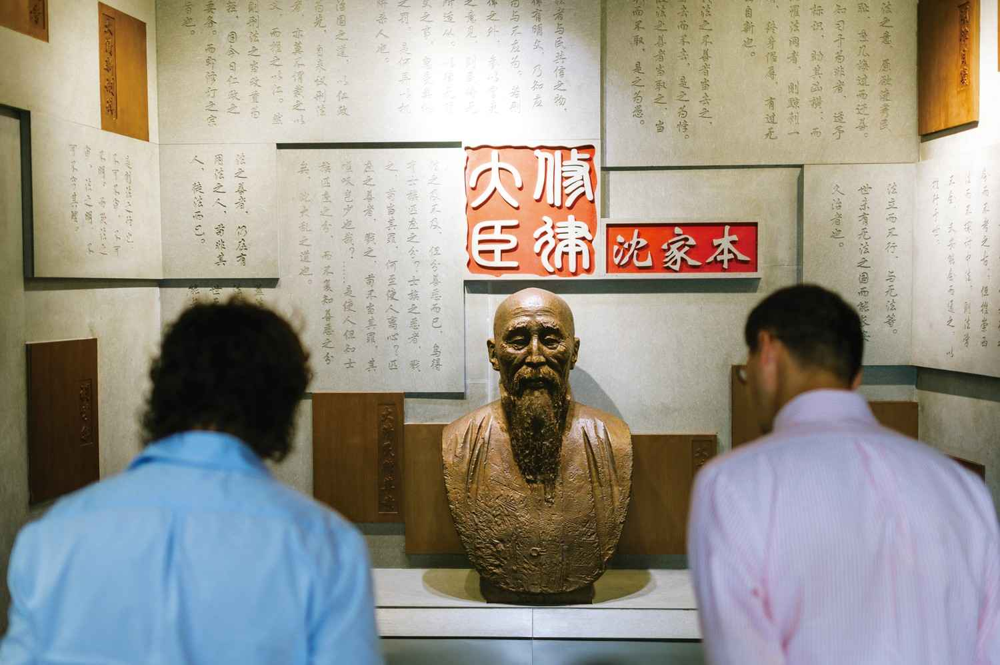
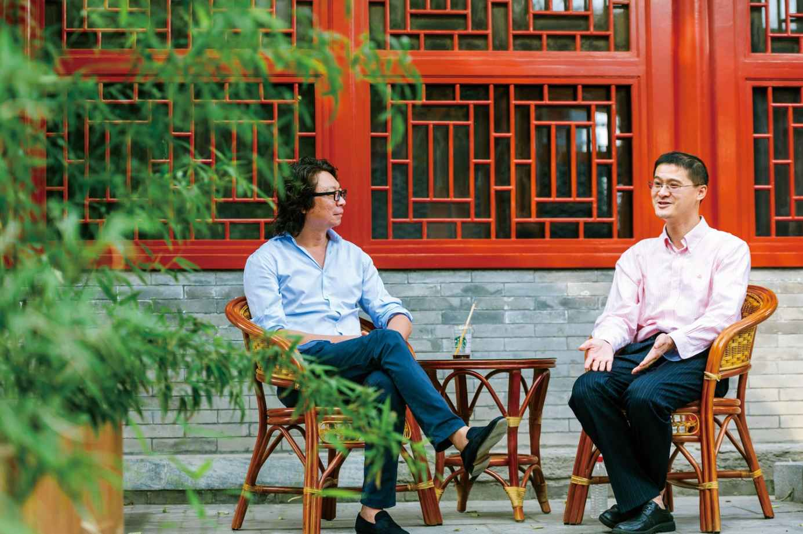

2020年12月25日 腾讯新闻《十三邀》访谈
许——许知远；罗——罗翔
许：如果找一个非常杰出的法学人物，鼓舞你的是谁呢？
罗：想起来其实很多：马丁·路德·金、甘地、林肯……
许：他们身上最触动你的是什么呢？
罗：勇敢。其实在我的词汇中，我觉得“勇敢”是一个最高级的词语吧，因为我自己不够勇敢。在人类所有的美德中，勇敢是最稀缺的。
许：当你愤恨自己不勇敢的时候，怎么办呢？
罗：愤恨没有用，就当命运之神把你推向那勇敢的时刻，希望你能够像你想象中那么勇敢。
许：所以今天我们是两个都认为自己胆怯的人的交流。
罗：是。
罗：您是1976年的是吧？
许：1976的。
罗：我1977的。
许：同龄人。
罗：怎么说呢，因为我是独生子女，就在我那个年代，独生子女是很罕见的，所以小时候还是比较孤独的，确实比较孤独，因为其他人都有哥哥姐姐。
许：要不怎么会爱看书呢。
罗：对啊，就是在孤独中躲进了书籍中。
许：最早对你影响最深的法律书籍是什么呀？
罗：其实很浅的，林达的“近距离看美国”系列。
许：也是一代人的启蒙读物。
罗：对。我最近这个月在看《通往奴役之路》，我看了一下，买书的日期是1999年。这都构成了我们最初的阅读计划，到现在大部分的书都（还是那时候的书）。
许：我们都是万圣书店训练出来的。
罗：我到现在都认为，学习就是一种回忆，就是说这些知识，本身已经在你的心目中了。就像苏格拉底所说的，对于你懂的东西，你才会真正地认同；对于你不懂的东西，你不可能真正地认同。而什么叫“懂”的东西呢？这就像康德所说的，人类的原初设置，就是我们出生的时候，就有一些“出厂设置”。当你的一些理论迎合了这些“出厂设置”，老百姓会觉得，你说出了我想说，但表达不出来的话。
许：有的是华为设置，有的是苹果设置，不一样是吧？
罗：但是总体上来说，（不管）苹果还是华为设置，它整体上又是一样的，就是我们要追求真，我们要追求善，我们要追求美。
许：那天我跟一个朋友讨论问题，他认为（追求）美是天生的，他认为寻求正义、正直不是天生的。
罗：为什么人会追求美？因为还有美更上面的东西。说实话，对好的东西，人们都想自我保留；但是当你发现了最美的东西，你绝对不会自我保留，你会觉得这太美了，我一定要分享出去，因为它确实太美了。你就会发现这个“美”，一定不是你培育的，只是你洞悉了美的惊鸿一刻，你觉得太伟大了，太美了。那么在美之上，一定还有一个更伟大的存在，就是永恒的公平、正义。
许：所以你也认定乌托邦是必要的？
罗：我认为，“理念意义上的乌托邦”是有意义的，但是“现实中的乌托邦”是不可能的。我们画不出那一个完美的圆，我们无法追求到绝对的美，但是你不能够推导出这个世界没有美，这个世界一切都没有意义。（如果是这样，）那人的存在就是没有意义的，人类追求美德是没有意义的，人类追求美德就是一种伪善。
许：你对这种相对主义的警觉，你觉得是怎么来的？
罗：就是我会发现，人类中很多概念具有相似性，但在这些相似性的概念中间，一定是有一些细微的区别的。而现在我们的思维，为什么人们习惯于标语化的思维？就是因为觉得世界太复杂。当我理解不了那么复杂的世界，我就选择一种简单化的世界。但是复杂一定是存在的。
许：我看你写的东西那些感觉，我们这个年龄前后的那段记忆，就是九十年代塑造的那段记忆，慢慢开始重新显现出来了。
罗：你看过贾樟柯的《小武》吗？就基本上那种感觉，贾樟柯确实拍出了我心里想表达但无法表达的那种感觉，真的是那种感觉。有的时候我真的在想，人生中的成就很难说。我身边很多朋友，就我小时候的玩伴，坐牢的、吸毒的、得尘肺病去世的，40多岁。
许：最要好的朋友在干吗？
罗：小时候最要好的朋友，现在都不联系了，他们就觉得不想麻烦我。
许：我们这代正好是那时候，转折很大的时候，变化很大的。
罗：我给学生带着读这个《通往奴役之路》。《通往奴役之路》的最后一页，就是当时听江平教授的一个讲座（的笔记）。我也没带笔记本，就拿那本书做的笔记，1999年。
许：记的啥？
罗：那讲的是专业性的问题，讲的是美国的“个人合伙”。以前合伙是无限责任，就合伙人要承担无限责任；后来随着市场经济的发展，慢慢出现了LP，又出现了LLP，又出现了LLLP[122]。它的基本思想就是：市场的发展是无限的，法律制度只是适应市场经济的一些需要，就法律不可能超前，法律只可能滞后。正好当时看哈耶克嘛，哈耶克就是警惕人类的乐观主义，就是说，你不可能计划出一切的东西，你只能去尊重这种自发自生的秩序。
许：意识到这点，过程还挺难的，包括这种自发性。
罗：就包括自己嘛，包括对自己的乐观主义，对理性主义的警惕。我大学的时候是读尼采的，你想我们那个时候，就喜欢读这种意识流的东西，喜欢读这种小段论述，《查拉图斯特拉如是说》。
许：快感式的阅读，动人啊。
罗：很动人啊。但你后来发现，这些哲学家都不过正常日子的。让他过过正常日子，每天做做饭、带带孩子，去医院挂个号。
许：哈哈。

许：你说这些古代的统治者，他们认为这种残忍（的酷刑）和他们统治之间的关系是什么呢？
罗：这其实还是受法家的影响，就是韩非子。法家的基本思想就是，刑罚是威吓的一种工具，杀鸡给猴看。有的时候，你会发现它也有合理性，如果我对一个犯罪，搞一个极猛的刑罚，那么，第一，就没有人敢犯罪了；第二，这个刑罚也是不会运用的，就达到一种平衡了。
许：那它的另一个后遗症是什么？
罗：这个弦会崩断的，如果崩断了，它整个体系就崩断了。比如说，我就偷了五个苹果，被判死刑，那“民不畏死，奈何以死惧之”[123]？我偷了五个苹果就判死刑了，那老子再杀五十个人，反正也就一死嘛。但中国古代解决的方法就是：死我也要让你不得好死。偷五个苹果，把你头剁了；如果杀一个人，我给你腰斩。它通过这种刑罚执行的极度残酷性，来实现所谓的罪刑均衡，其实就是不把人当人来尊重，它认为人就是工具，人跟人就是不平等的，所以这也是沈家本的伟大。
许：他认为废除酷刑是一个非常核心的问题。
罗：对。因为罪刑法定的根本根基，其实就是对刑罚权本身的约束。
许：这也是整个中国近代法律系统转型中最大的一个困难。
罗：对。你看我们刑法的罪刑法定思想，其实真正落在我们现在的刑法中是1997年，因为大部分老百姓心目中对刑法的观念可能也没有彻底地接受。大家总是认为，惩罚犯罪是最重要的。大家一看到刑法，本能想到的就是定个啥罪。
许：你觉得这东西，还要多久才能发生真正的改变？
罗：那就慢慢来，其实第一是观念，真正能够影响人类的，就是观念。他们老说“大学之大不在大楼，乃在大师”[124]，或许也不是大师，是伟大的观念。
许：比如说我们看到沈家本那个时代，中国也是要从一个礼教的社会进入一个现代法治社会，这么一个很大的转变。那么我们现在面临的核心问题是什么呢？
罗：我们是学法律的，肯定对我们的专业有一种很大的期待。我能想到的，就还是用法律来治理，用法律来约束权力。对于公权，只要是法律没有授权的就是被禁止的；对于私权，只要法律没有禁止的就是被允许的。就是这些最普及的一些法治观念，能不能在你的内心形成一种确信？最重要的是，当你成为一个拥有权力的人的时候，你愿不愿意接受法治的约束？
许：你刚才说这两点，公权和私权，这个理念是在什么年代开始形成和成熟的？
罗：它最早的萌芽，我们一般认为是1215年英国的《大宪章》。因为《大宪章》虽然是一种权力斗争的副产品，但是在《大宪章》中，确实是出现了“王权有限”“法律至上”这样一种思维。这种思维，在漫长的历史演进过程中，我觉得如哈耶克所说的“自生自发秩序”，它会有一种竞争化的优势，所以慢慢地这种“罪刑法定”的思想就席卷整个世界，至少现在，绝大多数国家都在文本上认同罪刑法定思想，也就是认同法治的治理方式。
人类的治理方式说白了也没有多少，无非就是人治、法治。柏拉图最早也是主张人治的，当然在三次西西里的惨痛经验[125]之后，退而求其次，选择了法治。我们所处的社会是冲突不断的，每天都有冲突，而法律就是解决这种冲突的。但是在解决这种冲突的时候，法律又可能会制造一种新的冲突，因为法律本身它是强调秩序，不管是严刑峻法也好，还是法治框架的限制权力也好，它其实都是要追求一种秩序。我觉得追求秩序本身没有问题，但是我们还需要另外一种双保险，就是对于追求秩序的力量本身（有所警惕）。
许：你看，比如经济学，甚至政治学，在其他的不同领域里面，我们的整个公共讨论得更多，这些观念本身也更清晰，但只有在法学这块，好像观念始终非常之模糊，包括那些所谓的受过教育的人，对我来说也是很模糊，这个原因你觉得是什么呢？
罗：我觉得可能还是法律本身的神秘化，法律本身的貌似的高阶化。
许：我之前看梁治平[126]老师写的一篇文章，我挺有感触的。他说，某种意义上，在20世纪中国，我们的法学家没有真正地有力量地参与到整个社会的知识辩论和思想辩论之中去，跟这个有关系吗？
罗：也许也有。就是我们有时候会有一种自我的封闭化，我们觉得我们是专业人士，作为专业人士，只应该做专业人士所应该做的事情。一旦走向公众，我们很害怕专业会变味，会玷污我们专业的“纯洁性”，因为知识是有槽的嘛。
许：这帮人是被高度地技术化了。
罗：对啊，就是一定会有“‘茴’字有多少种写法”“关于这个问题，有几百种学说”，会走向这样一种（境地）。
许：你上学时候就意识到这点了吗？
罗：我上学其实没有意识到，因为我上学时以技术主义为荣，我能够推导出跟老百姓观点不一样的感觉，我感到很开心，觉得没有白学，对吧？
许：那什么时候开始发生变化的？
罗：后来慢慢地发生了变化。就是你很多高傲的观点，跟老百姓基本的内心常识是相抵触的时候，但在技术主义、逻辑上论证是没有问题的，但其实是抵触人内心的良知的。
许：这个思想变化，到底是怎么慢慢发生的？
罗：我觉得还是，人生的经历吧，就是人要接受自己的有限性。就是人承认自己是有限的，于是承认你的逻辑是有限的，承认你的理性是有限的，承认你的阅读是有限的，承认你整个人就是在偏见之中，你这一生就是在走出偏见。那当你这样来想，你就会慢慢地有一种反思。
许：这个变化是有什么契机，然后慢慢发生这样转变的吗？
罗：那肯定是有嘛，你不可抗拒的一些力量……就当你真正地经历了一些生离死别，或者一些亲人所遭遇的苦楚啊，那个时候你就会真的发现，人的力量是很有限的，浇一桶凉水。而且人最大的痛苦就在于什么呢？我觉得人最大的痛苦，就是无法跨越“知道”和“做到”的那个鸿沟。就是笛卡尔所说的“我思故我在”，这个很对，但是“我思故我在”经常让我们沉浸于一种幻象之中，就是我只要思考到了，我就能做到，但其实不是这样。你思想过深刻的东西，你说过深刻的东西，你感动过深刻的东西，你被你自己所说的感动了，你就真的觉得自己做到了。很多时候，这是一种自欺，尤其对我这种做老师的人，有的时候你就会想，你跟学生所教导的，你自己能不能做到？
所以当你问我，为什么会有那个转变，其实在很久之前，2008年就是入校第三年，就获得“最受本科生欢迎的十位教师”奖项。那个时候其实是有一种强烈的骄傲感，自己也觉得自己很厉害。但是你内心深处会有一种冲突，就是很多时候，你自己所教的，你做不到。你是在骗别人，你也在自我欺骗、自我麻醉。所以有一段时间，就觉得很虚无，就觉得挺没劲的，你为什么要骗别人？你为什么要骗自己？

许：那次危机怎么应对过去的呢？
罗：所以从那个时候，我就希望能够过一种生活，给自己一个目标。至少那么多年来，我给自己的功课——当然虚伪是肯定的，每天都活不到那么清澈——就是你的行动，在你的言语之前，能够多那么一步，我觉得就可以摆脱这种虚伪的自我控诉吧。
许：你怎么看待这几个月给你带来的突然的、新的现实生活呀？因为之前是在大学的讲台这个平台，然后现在是一个由音频、视频、弹幕、社交媒体构成的舞台。网络世界因为新的曝光，它会形成一种新的生活环境，你现在已经很适应了吗？
罗：我还没有特别地分清，因为我始终还是像以前一样，用教书来进行教导。只是你会发现，现在的影响力，感觉比以前更大了。但是，我觉得很快会退却掉吧，因为本质上是虚荣嘛。虚荣会给人带来痛苦，而且虚荣也不真实。
许：美好的部分是什么？
罗：会有短暂的快乐。
许：现在你已经厌倦了这个短暂的快乐了吗？
罗：谈不上厌倦吧，因为，我不能够弃演。我觉得，每一个舞台都有每个舞台的意义。人最大的问题，就是喜欢高看自己，贬低他人。有的时候这种高看，是以拒绝来进行高看，有的时候是以合作来进行高看，但本质上来说，每一个舞台一定有每个舞台它背后厚重的意义，但是又不要过于高估这个背后的厚重的意义，以至于你留恋这个舞台。就是说，在这个舞台中，你做好这个舞台所赋予你的，你想去做的事情；有一天别人说“够了，下去”，那你下去就好了。但在某种意义上而言，我又始终要告诫我自己，人能影响的人，或者说，人能真正影响的人，其实很少很少。很多人所谓的“被你影响”，那只是片刻感动了，最后还是投入到自己以前的生活。人可以有片刻的感动，不可能持久地感动。你能真正影响的人，一定是你愿意在他身上投入大量的时间的，跟你有真正的接触的那些人。
许：但现在片刻的感动，已经成为这个时代最重要的一种方式。
罗：对，但是这很多时候是一种自我欺骗。你在欺骗自己，你也在欺骗别人，你也让别人陷入了一种自我欺骗。
许：所以你也不会有那种感觉，好像大家真的因为罗翔，然后对法律世界产生了新的兴趣。
罗：我没有这种幻觉。如果要说得自我麻醉一点儿，真的是希望能够影响他们，让他们不单单成为技术主义者，让他们知道技术背后的那种价值。因为我自己是这么走过来的，我自己以前就是一个很注重技术主义分析的。后来你慢慢地觉得，这种技术主义的分析得出的结论，就是今天可以是A结论，明天可以是B结论，就是看客户的需要，但你没有一个稳定的基石。我希望我的学生会有一个稳定的基石，就像我们今天走到的这栋楼。
这个楼肯定跟沈家本住的时候不太一样，但是，内在的精神还在这，那你会觉得法治它一直在传承，对吧？
许：包括刚才我们聊的那些，因为这个问题也困扰我，就是我们都会觉得“泛道德化”其实某种程度上在摧毁道德。
罗：对。
许：但这个结论下面这个逻辑链条，到底是什么呢？
罗：因为，我们必须认同“道德是自律，而不是他律”，比如说有一种道德主义，叫做“道德完美主义”，就是说，你得做一个道德高尚的人，如果道德不高尚，那么强行让你成为一个道德高尚的人。我之所以让你道德高尚，不是为了惩罚你，是基于爱你，因为我想让你变得更好嘛。所以我们不能看黄色小报，因为你这样道德不高尚啊；路边上看到一个人（求助），你得救他。但是很多时候，人是达不到这种道德高度的。这样的一种规则，很容易导致虚伪。道德是要求自己的，而不是要求他人的。
许：但这种泛道德倾向，好像始终是非常之强烈，现在好像再度变得强烈起来。
罗：我还是这么说，就是有很多东西具有相似性，但是它并不是具有相同性。在某种意义上，我现在越来越拥抱法律和道德是一元的，而不是截然分开的；但是，我个人更拥抱的，是所谓的“消极道德主义”，而不是“积极道德主义”。
什么意思呢？所谓积极道德主义，就是以道德作为惩罚正当化的一种依据，只要一种行为违背了道德，那我们就要千方百计地对他进行惩罚。这是传统中国的一个特点，就是我们希望把人都塑造成圣人，塑造成英雄，但是这样一种道德的治理方式，反而会导致很多人的无道德。
消极道德主义，就是把道德作为一种出罪的依据，作为一种正当化的依据。一种行为，如果在道德上是值得谴责的，那它不一定是犯罪；但如果一种行为在道德生活中是被鼓励的，那它就不应该受到惩罚。所以法律其实是对人最低的道德要求，就是我们要宣布国家法律的权威性，但是我们在量刑的时候，充分考虑到人性本身的那种软弱。最典型的就是帮助自杀的定刑问题。（母亲）绝症缠身，不想拖累家庭，跟女儿说：“帮我买个药吧，我实在不想活了。”不断地劝说。后来没办法，女儿给她买了瓶药，母亲说：“你离开吧，我想一个人安静一下，你三个小时后回来。”她在三个小时后回来，母亲就已经喝药了。那这种行为在我国法律中，她肯定是故意杀人没有问题，因为这属于得到被害人承诺的杀人行为，人没有权利承诺别人结束自己的生命，所以她构成故意杀人罪。但在量刑的时候，在司法实践中，通常都是判缓刑。就是因为，首先她违反了一个基本的戒律——禁止杀人，但这种行为在道德生活中，人们会觉得很同情、容忍，那就可以在刑罚的处罚下，给她予以缓刑对待。
许：比如说我们在碰到这样的事情的时候，会发现公众有一种朴素的正义之心，或者说道德之心；但同时你又经常发现，他们所谓的那一种朴素的正义之心或道德之心，又有一种高度压迫的特性。不同的时代，由于技术的变化，都会使大家拥有一种新的道德参与、正义参与的方式。我们在过去一些年见到最强的就是这么大规模地通过网络来参与道德审判，甚至是正义审判。
罗：这就是为什么需要程序。法律强调程序正义，因为司法一定会有错误，但是司法的错误，如何能够被人所接受？就是强调程序，通过程序所推导的过程，即便错了，那这也是程序本身所推导的。民众很多时候是希望撇开程序，去追求心目中的一种正义，而这种正义，反而会导致一种非正义，就“行侠仗义”嘛，最后冤冤相报，会酿成最大的灾祸。所以我们法律在很多时候，就是为了追求程序。我们就会认为，在程序中，我们才能达到一种可见的正义，这种人们可能接受的，有瑕疵的正义。
许：我们小时候都会迷恋这种结果正义，仗义之心这种东西，这东西怎么样可以慢慢修正过来？通过什么样的训练？
罗：我觉得就是法治。因为很长一段时间，我们确实没有法治的传统，我们从来都认为，规则是针对别人的，规则不是针对自己的，强人一定是跳出规则之外的。所以我以前看《西游记》，我就觉得很奇怪，为什么孙悟空以后的战斗力越来越低？后来我才发现，原来孙悟空是成熟了，变成遇到事首先找人，也就是说没关系的妖魔鬼怪“啪”全都打死。那你就会发现，这就很明显地体现出我们对于规则本身的不尊重。为什么我们爱看武侠小说。我到现在都背得出李白的《侠客行》：“赵客缦胡缨，吴钩霜雪明。银鞍照白马，飒沓如流星。十步杀一人，千里不留行。事了拂衣去，深藏身与名。”那多爽啊！但后来你慢慢地会发现，如果正义靠这种途径去实现，那一定会导致更大的不正义。往往是善良的愿望，把人们带入人间地狱。
许：这种转变是大概（因为）什么？
罗：那还是法律的训练。因为法律的训练，会不断地提醒我们程序正义，要警惕实体正义，要在程序中去追寻正义。
许：所以说从我们对孙悟空、韦小宝、令狐冲的迷恋，特别可以看出我们中国人对这种规则、秩序，对法律意识的（淡漠）。
罗：其实还是没有真正的法治观念，就是我们觉得，只要我的动机是好的，我就一定是好的，但是动机好不代表结果好。
许：而且更深层的是一种不负责任的自我的寻求。
罗：对啊，他就放纵嘛，放纵自己的激情，放纵自己所谓的“正义感”。因为所有的东西都是需要节制的，因为我们都是并非完全理性的存在，所以我们所有的情感是要受到节制的。我们愿不愿意谦卑地去接受一种程序的正义，即便这种程序的正义没有达到我们心目中的正义？
许：它是不是也是因为我们处在这种社会里面？比如大家对孙悟空的迷恋，那种正义的放纵或者宣泄，变成是一种表达自由的方法？
罗：是。所以这就是为什么（需要）法治。其实很大程度上它是自上而下和自下而上的一个结合的过程，就是说，法治它首先强调权力本身是要受到约束的，然后在这样的一种约束的背景下，慢慢地，其他人也会愿意去约束自己，因为它是一个双向的过程，它不可能是一个单向所造成的。
罗：知识分子的一个重要的特点，可能还是像苏格拉底所说的，“做城邦中的牛虻”[127]。
作为我们法律人，我们是双向牛虻：一方面，我们是城邦的牛虻，我们要对权力进行警惕；一方面，我们是民众身上的牛虻，我们要提醒他们，激情是有界限的，激情也要在法冶的界限之中。
许：同时要警惕自己这个牛虻，不要具有太强的个人崇高感。
罗：对。
许：你这么一个自省的人，你肯定也想过，为什么这一年，突然舞台聚光灯就打在你身上。你觉得原因是什么？
罗：我其实很难去解释，但是人又始终想去解释，你要说真的解释的话，我觉得，就是在一个特殊的时候，民众内心对公平和正义的期待，在我的这些小视频中得到了回响。
许：你有时候看到那些小视频，你是什么感觉？
罗：我有的时候，自己看也觉得挺有趣的。我讲的时候没觉得有趣……看来这个视频也是作品，创作的作品就离开了你。
许：对，你可能要接受它就是你的作品。会觉得这种传播方式，一方面传播了这些东西，但另一方面，可能又弱化了你要表达的东西？
罗：也许吧，因为人要接受事与愿违啊，我们太有限了，我们只能做我们觉得是对的事情，然后接受它的事与愿违。
许：但你说，不断地承认我们自己的有限性，就这种言语方式，它是不是也是一种过度的自我保护，这样的话会安全？
罗：可能是。就是你可能接受哪一天事与愿违，你说我已经意识到这种事与愿违了。但是在某种意义上，这可能确实是我自己真实的想法。我始终相信，我们不可能追求到绝对善，但是我们也不能因为绝对善追求不到，而退向相对主义。我们依然是一种现实主义的有瑕疵的善，至少我现在觉得自己所做的事情是有意义的。至于这种意义，最后是不是会导致意义的消解，导致意义的降低，我真的是不知道的，否则如果你始终是觉得，你这个事情太有意义了，你一定要努力做下去，那最终可能就会（事与愿违）。
许：你总是喜欢引用那句，推到舞台上嘛。那你怎么评估自己的“表演能力”呢？
罗：我不知道啊……谁能知道，明天会拿到什么样的剧本？就是过好每天，做好每天该做的事情。
许：那个决定性在哪里呢？
罗：决定性就是，拿到哪个剧本，按照你内心最想要的、最真诚的（样子），去演好。你要警惕自己，不要进入一些试探和诱惑之中，要节制嘛，说白了就是节制，很多东西都需要节制。
许：你知道我最近这一两年是什么感觉吗？我好期待那种狂喜的到来。
罗：狂喜挺好的，因为人生需要狂喜啊。但是真正这种狂喜呢，它是给你带来那种不可知的神秘，还是给你带来一种确定性的神秘？
许：苏格拉底的狂喜，是他遇到一个非常好的学生，可以追问他各种问题的狂喜？
罗：我觉得不是，是诚实地对待德尔斐神谕[128]。自从德尔斐神谕启示了他，他就不断地去验证德尔斐神谕：雅典有没有比苏格拉底更有智慧的人？后来发现没有，因为苏格拉底唯一的智慧是否定性的智慧，承认自己的无知；但凡所有的雅典人，从上到下，从卑到贱，都是觉得自己很厉害。所以苏格拉底不断地在挑战，承认自己的无知。他诚实地对待了德尔斐神谕，在最后的审判的时候，他依然诚实地对待了他的使命，他要揭示那个审判的虚伪，揭示那个审判的自大，揭示那个审判的自以为是。
如果你不知道读什么书？ 关注公众号：【奥丁读书小站】 【奥丁读书小站】一个专业推荐各种书籍的公众号，推荐的这些书都绝对当得起你书架上的一席之地!总有些书是你一生中不想错过的！